Sophia Callahan
 AmaAma is a project about Amas, a dying cultural practice in Japan of women free divers who traditionally dove for abalones and pearls. This project investigates myth, performance, and material culture through paintings, soft sculptures, and photographs.
AmaAma is a project about Amas, a dying cultural practice in Japan of women free divers who traditionally dove for abalones and pearls. This project investigates myth, performance, and material culture through paintings, soft sculptures, and photographs.
Personal Projects
Sophia Callahan is an artist whose work takes the form of writing, painting, installations, videos, group projects, small brands, soft sculptures, and zines.
Sophia has an undergraduate degree in Strategic Design and Management from Parsons School of Design and a masters degree in Folklore from UC Berkeley.
Ongoing projects
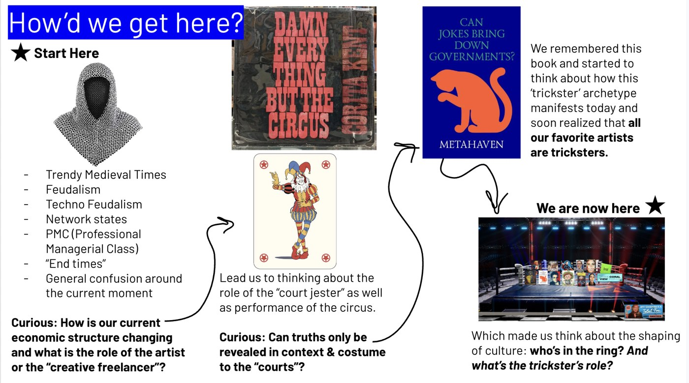
Archetypes/TrickstersA collaborative project with Noah Emrich, Chris Fussner and Jordan Caldwell on the archetype of the trickster and other similar actors.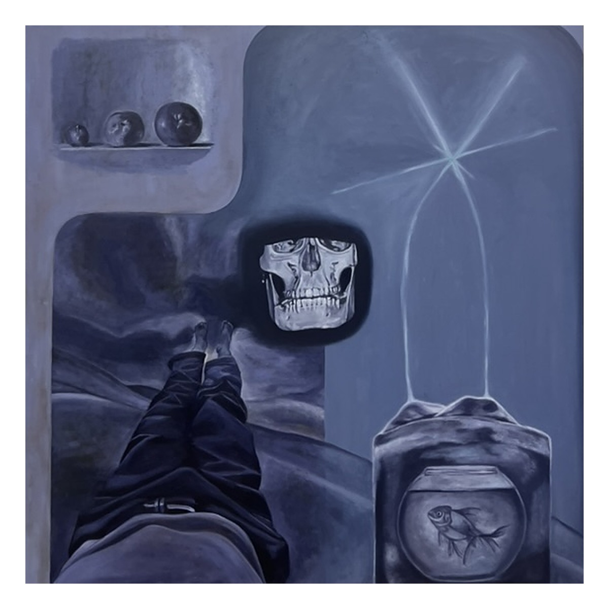
PaintingsFree Books (2024), Quicksilver (2022), etc.Project archive
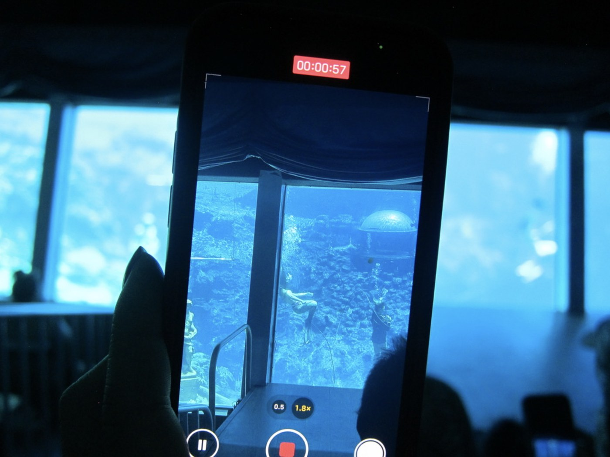
Weeki WacheeResearch on mermaiding at the Florida roadside attraction and its ties to tourism, folk museums and the nation-state. The paper Making the Mythical Material: Weeki Wachee, Mermaids, and the Institutionalized Folkloresque was presented at the American Folklore Society Conference in Atlanta, Georgia (October 2025) and UC Berkeley's Folklore Colloquium (December 2025).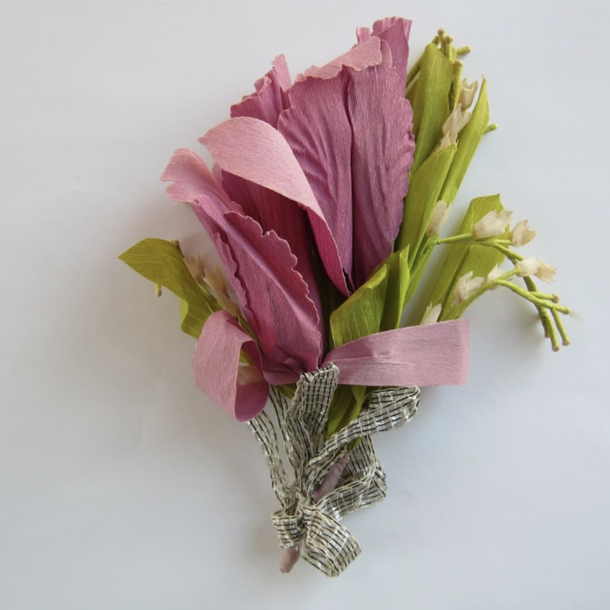
Paper FlowersThe Politics of Paper Flowers: Connection, Continuity, and Contestation. A research paper on paper flowers made during Japanese American incarceration in WWII.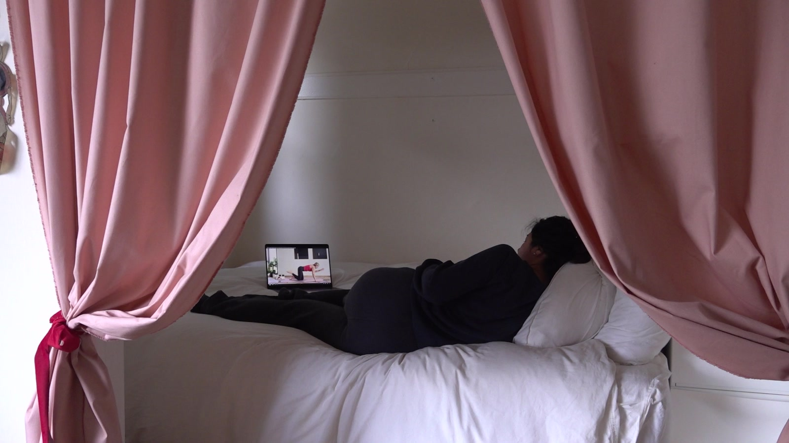
Venus, etc.AmaAma is a project about Amas, a dying cultural practice in Japan of women free divers who traditionally dove for abalones and pearls. This project investigates myth, performance, and material culture through paintings, soft sculptures, and photographs.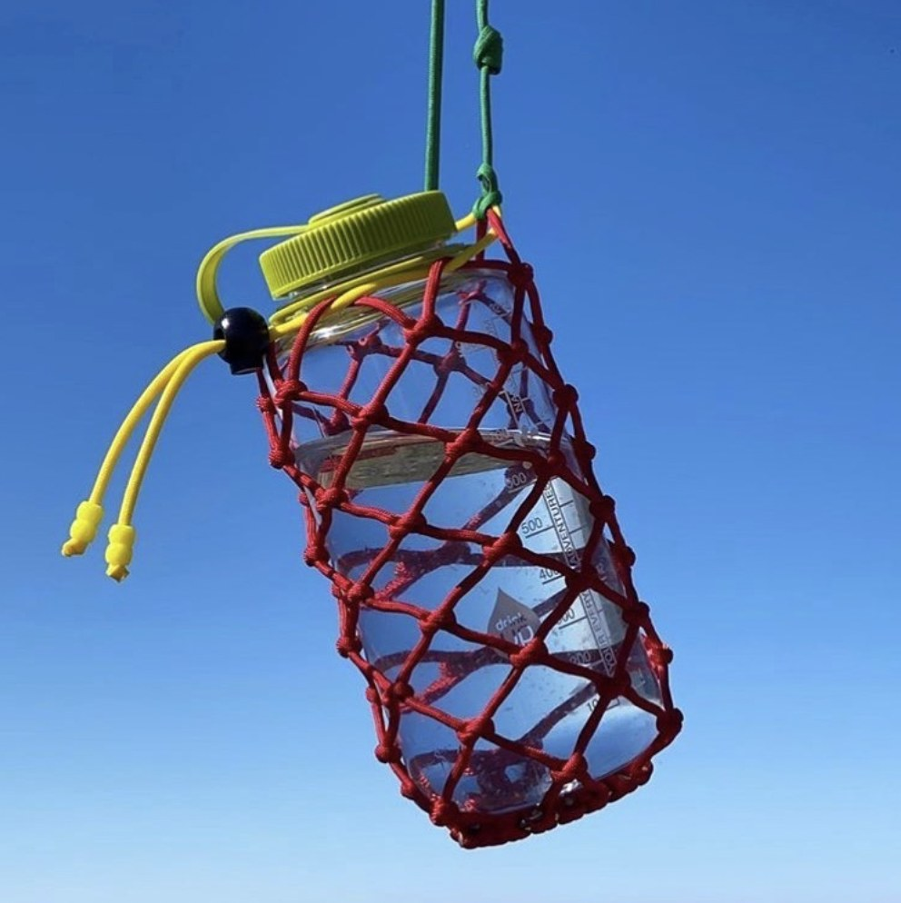
Home EconomicsHome Economics was a homemade brand and shop that produced netted bags, clothing, and calendars.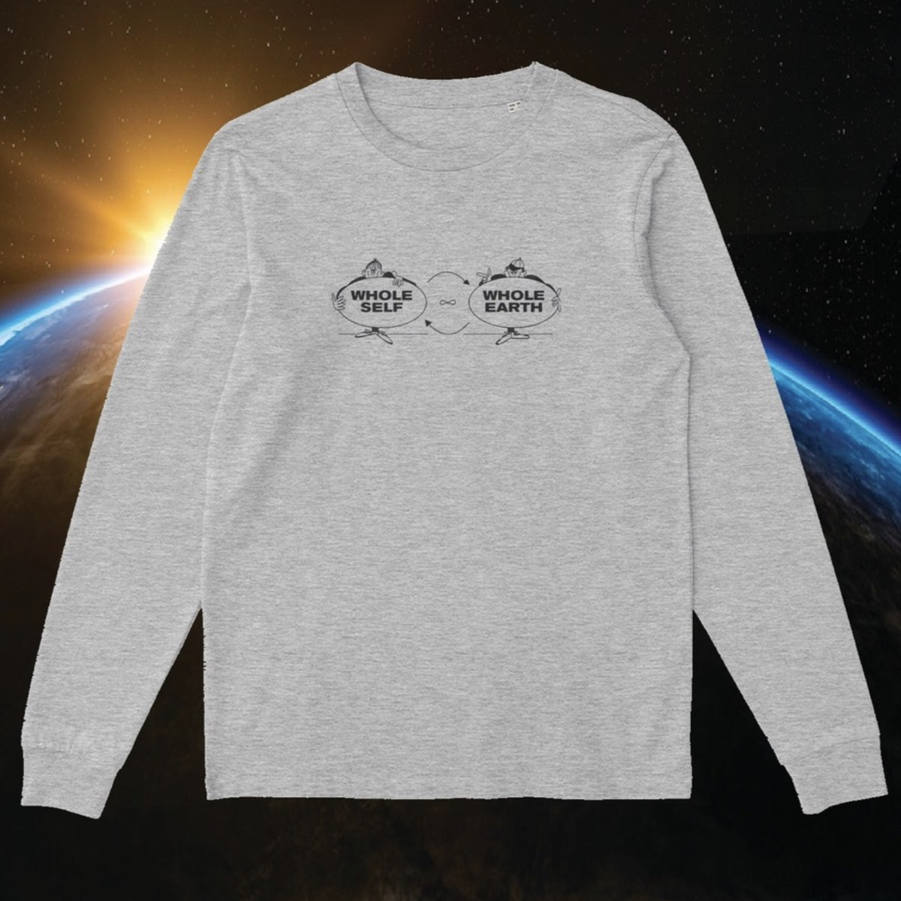
Good Earth NYCA design research project archiving New Age symbolism and iconography, made with Elijah Anderson. T-shirts, printed materials, local collaborations and an online bookshop.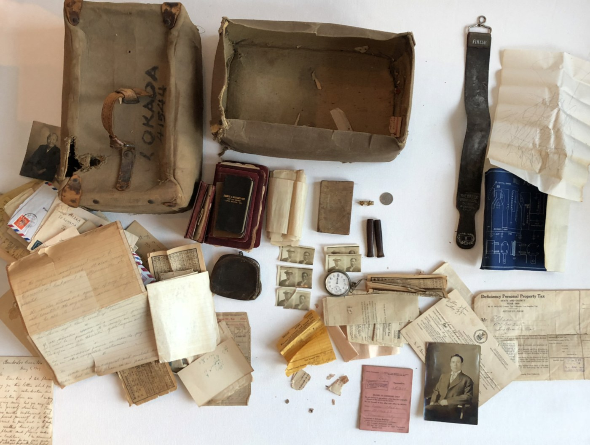
Camp ProjectThe intergenerational effects of Japanese American incarceration. Made during a residency at 2727 California Street, Berkeley: four publications, two workshops, 20+ interviews, a talk and a visiting library.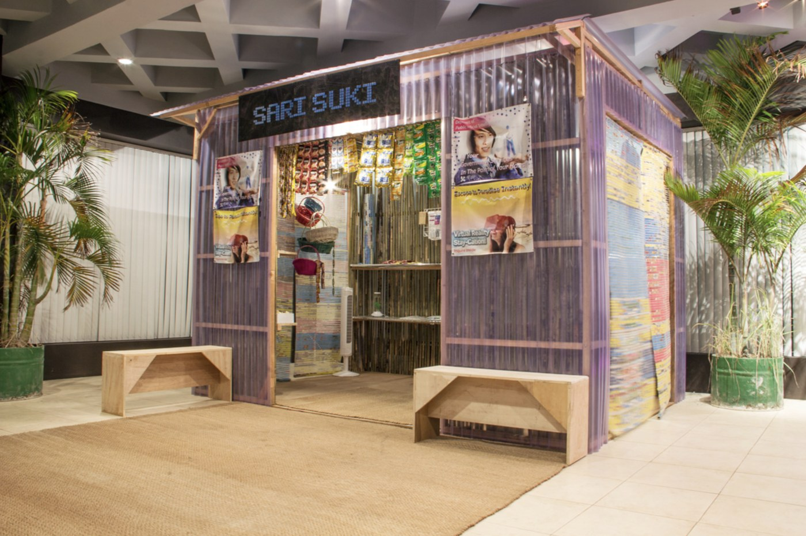
Sari Suki 2050An installation at 856G Gallery, Cebu, imagining the future through a Filipino sari-sari store. Made as VSOON with Noah Emrich and Chris Fussner.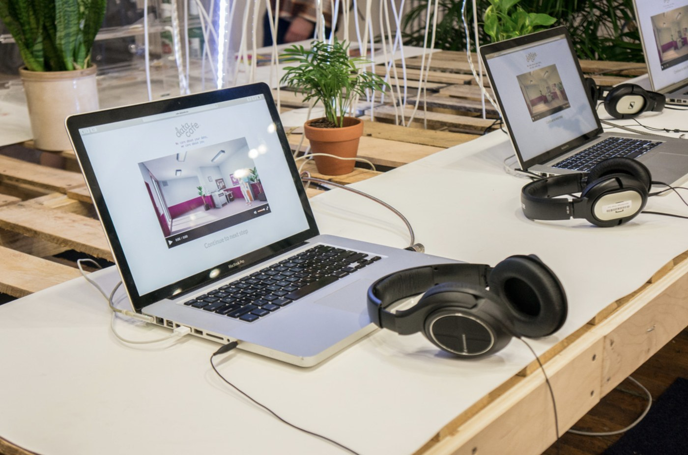
Data CafeAn interactive installation at NYCxDesign Week, Industry City, where visitors trade personal information for a cookie. Made with Noah Emrich, Chris Fussner and Henry Lam.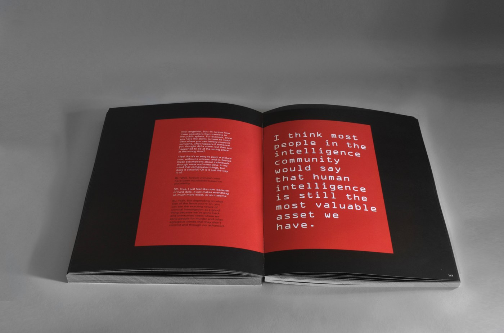
Post Snowden AestheticsA 240-page book imagining cultural shifts after the NSA disclosures, with micro trend forecasts, expert interviews and a glossary.
Contact: sophiacallahan@gmail.com